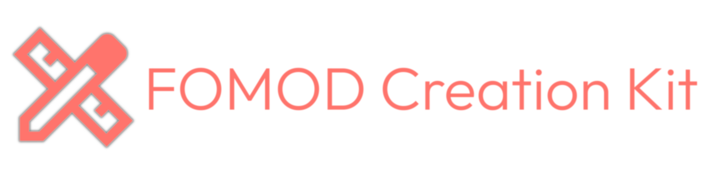

A hobby developer and mod translator.
Check out my GitHub profile
Check out my Nexus Mods profile


This tool allows you to translate entire modlists with relatively little effort. It utilizes AI-based language detection to automatically identify necessary translations in your modlist. The tool then searches for available translations of the original mods on Nexus Mods and downloads them (automated downloads are exclusively available for Nexus Mods Premium users).


This is a tool for migrating modding instances between mod managers. Originally planned as a tool to import Vortex Collections into Mod Organizer 2, it got expanded to a general migration tool for mod instances with a lot more features than that.
This is a tool that dynamically patches user interface mods like RaceMenu or MiniMap that have closed permissions. It dynamically modifies SWF files according to changes noted in JSON files and supports shape replacing.

An intuitive yet advanced tool for editing and creating FOMOD installers. The entire tool is designed to be self-explanatory with small info texts placed everywhere making the creation and editing of FOMOD installers accessible for beginners that are looking for a nice way to package their mods. Advanced users already familiar with the FOMOD specification will find that this tool supports every single feature the specification has to offer.
This is an AI-based automatic Language Detector made to scan entire mod instances. It is used to find untranslated mods. You will be able to scan through your entire mod list and see if there are any leftover mods that are in the wrong language. This will be particularly useful for translators and players who do not play their game with an English text version.